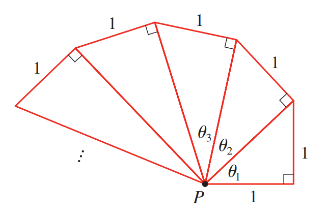
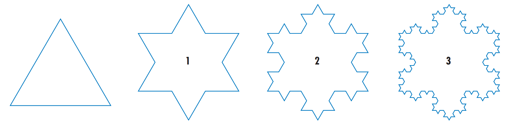

What is the sum of the geometric series
\[ 5 - \frac{10}{3} + \frac{20}{9} - \frac{40}{27} + \dotsb\,? \]
Does this series converge or diverge?
\[ \sum_{n=1}^\infty \frac{n^2}{5n^2+4} \]
Does this series converge or diverge?
\[ \sum_{n=1}^\infty 2^{2n}\,3^{1-n} \]
Fact: Every regularly repeating decimal number
can be written as a rational number.
How do you write \(2.317171717\dots\) as a rational number?
Challenges
(Stewart)
Suppose you have a large supply of books, all the same size, and you stack them at the edge of a
table, with each book extending farther beyond the edge of the table than the one beneath it. Show
that it is possible to do this so that the top book extends entirely beyond the table. In fact, show that
the top book can extend any distance at all beyond the edge of the table if the stack is high enough.
Use the following method of stacking: The top book extends half its length beyond the second
book. The second book extends a quarter of its length beyond the third. The third extends one-sixth
of its length beyond the fourth, and so on. (Try it yourself with a deck of cards.) Consider centers
of mass.
(Stewart)
Right-angled triangles are constructed as in the figure.
Each triangle has height \(1\) and its base is the
hypotenuse of the preceding triangle.
Show that this sequence of triangles makes indefinitely many
turns around \(P\) by showing that \(\sum\theta_n\) is a divergent series.

What is the area of the region bounded between the curve
\(y = 2\mathrm{e}^{-x}\sin(x)\) and the positive \(x\)-axis?
Note this area is not simply equal to
\[\int\limits_{0}^{\infty} 2\mathrm{e}^{-x}\sin(x) \,\mathrm{d}x\]
Koch’s Snowflake
(Stewart)
To construct the snowflake curve, start with an equilateral triangle with sides of length \(1\).
Step one in the construction is to divide each side into three equal parts, construct an equilateral
triangle on the middle part, and then delete the middle part (see the figure). Step two is to repeat Step
one for each side of the resulting polygon. This process is repeated at each succeeding step. The
snowflake curve is the curve that results from repeating this process indefinitely.

Let \(s_n\), \(\ell_n\), and \(p_n\) represent the number of sides, the length of a side,
and the total length of the \(n\)th approximating curve
(the curve obtained after Step \(n\) of the construction), respectively.
Find formulas for \(s_n\), \(\ell_n\), and \(p_n\).
Show that \(p_n \to \infty\) as \(n \to \infty\).
Sum an infinite series to find the area enclosed by the snowflake curve.
These last two parts show that the snowflake curve
is infinitely long but encloses only a finite area.
(Stewart)
Find the sum of the series
\[
1
+\frac 1 2
+\frac 1 3
+\frac 1 4
+\frac 1 6
+\frac 1 8
+\frac 1 9
+\frac{1}{12}
+\dotsb
\]
where the terms are the reciprocals of the positive integers
whose only prime factors are \(2\) and \(3\).
(Stewart)
If \(p \gt 1\), what is a closed-form expression for
\[
\frac{
1
+ \frac{1}{2^p}
+ \frac{1}{3^p}
+ \frac{1}{4^p}
+ \dotsb
}{
1
- \frac{1}{2^p}
+ \frac{1}{3^p}
- \frac{1}{4^p}
+ \dotsb
}
\]